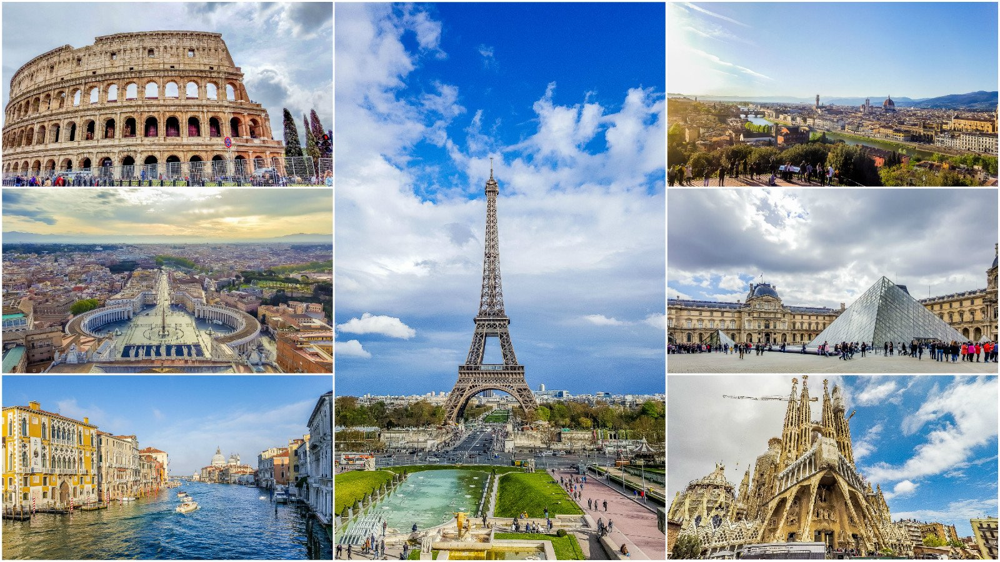

Азия
Азия – неповторимая и загадочная часть света с богатой историей, культурой и широким спектром самых
разнообразных климатов. Самобытность этой части света связана с тем, что она многие века по ряду причин
была недосягаема для европейцев.
В силу своих колоссальных размеров Азия поделена на регионы на основе территориальных и климатических
признаков. С туристической точки зрения наиболее посещаемы зарубежными туристами Восточная,
Юго-Восточная, Южная и Западная Азия.
Так уж получается исторически, что континент Азия расположен на одном общем материке с такой
частью Земного шара, как Европа. Исходя из этого, некоторая часть стран, расположенных на
Евразийском континенте, частично географически принадлежат Азии, а частично той же Европе.
Такого рода двойственностью «страдают» такие государства, как Казахстан, Турция и Россия. Так что, если
вы планируете совершить путешествие по этим странам, то вы можете получить уникальную возможность
побывать сразу в двух частях света, Европе и Азии.
Стоит отметить, что в Азии расположены государства, имеющие наибольшую численность населения на
Планете на сегодняшний день. А именно Индия и Китай, на территории которых проживает более одного
миллиарда населения. А помимо этого данные страны имеют наиболее древнюю тысячелетнюю культуру. Поэтому
любое путешествие по этим странам Азии предоставит вам возможность увидеть не только их
современные достижения, но и древнюю культуру.
Европа

Среди шести материков нашей Планеты одним из наиболее масштабных по своим размерам является материк
Евразия, который занимает территорию более 53 миллионов квадратных километров. И среди всего этого
разнообразия природных ландшафтов наиболее заселенной является Европа, которая занимает всего одну пятую
часть территории всего материка, занимаемого Евразией.
Если говорить о населенности Европы, то в отличие от Азии, более значительной части этого
материка, Европа является более густозаселенной территорией, 72.5 человека на один квадратный километр
площади. А проблема Азии в этом плане заключается в том, что основная часть ее территории представлена
безлюдными песчаными пустынями, суровой приполярной тундрой и высочайшими горами нашей Планеты.
На сегодняшний день страны Европы представлены пятьюдесятью государствами, которые не одинаковы не
только по национальным признакам населения, проживающего в этих государствах, но и по своим размерам.
Так, наряду с такими государствами, как Франция, занимающими площадь в десятки миллионов квадратных
километров, в Европе есть и так называемые «карликовые» государства. А это, такие государства, как
Монако, Ватикан или Кондора. При этом территория этих государств, как правило, сопоставима с площадью
некоторых столиц Европы.
Имея свою довольно богатую историю, насчитывающую не один десяток столетий, Европа обладает довольно
большим количеством исторических и природных достопримечательностей, которые просто жаждут посмотреть
миллионы туристов со всего мира. С учетом этого любой тур по Европе просто гарантирует массу
незабываемых впечатлений, которые не зависят от страны вашего пребывания.
Америка
На сегодняшний день, такой континент, как Америка является одним из самых больших континентов Планеты по
занимаемой им территории, ведь протянувшись с Севера на Юг Земного шара, на многие тысячи километров,
Америка занимает площадь в 42.55 миллиона квадратных километров. И несмотря на то, что по своей
численности, без малого в один миллиард жителей, Америка уступает только Китаю и Индии, в экономической
и политической области она играет довольно существенную роль в геополитическом плане. В величину площади
Америки входит не только территория, расположенная на ее материковой части, но и территории
многочисленных островов акватории Тихого и Атлантического океанов, включая Гренландию.
Географически континент Америка подразделяется на три основные части, а именно Северную, Центральную
и Южную Америки, которые имеют не только существенные географические различия, но и
социально-политические, и религиозные. Так, в свои годы, будучи колонизированными представителями
различных культур Европы, коренное население и многочисленные переселенцы впитали в себя особенности
именно этих этносов, что привело к тому, что Северная часть Америки имеет англоязычные корни, а
Центральная и Южная Америка в подавляющей своей части говорит на испанском языке и исповедует
католичество.
Северная часть Американского континента относиться к одному из шести материков Земного шара и
расположена в северной части Западного полушария Земли. При этом Северная Америка включает в себя не
только государственные образования, расположенные на ее материковой части, но и существенную часть
островных образований, расположенных в акватории, как Атлантического океана, так и прилегающей части
Северного ледовитого океана, где расположен один из самых больших островов Земного шара Гренландия.
Существенное отличие Северной Америки от ее южной части заключается в том, что Южная Америка, имея
практически такое же количество населения, как Мексика, Канада и США, располагает большим
количеством государственных образований, которые получили статус независимого государства в различные
времена истории этого континента, как следствие его колонизации со стороны многочисленных завоевателей,
пришедших из Старого Света.
С учетом того, что практически вся территория Америки, а именно ее Южная, Центральная и Северная части,
обладают большими запасами различных полезных ископаемых, которые представляли особый интерес со стороны
европейских завоевателей средневекового периода, на территории Америки было создано довольно большое
количество государственных образований. На сегодняшний день страны Америки насчитывают 35 независимых
государств, значительная часть которых расположена в Южной ее части. При этом нельзя не отметить, что
такие государства, как Канада и Соединенные Штаты Америки, расположенные в Северной части, являются наиболее
высокоразвитыми странами не только на американском континенте, но и во всем мире.
Африка
На сегодняшний день Африка является вторым по своим размерам континентом в мире, который, располагая
площадью в 29.2 миллиона квадратных километров, уступает по своей территории только Евразии. При этом
Африка - единственный в мире континент, через который пролегает меридиан Экватора, а также располагающий
несколькими климатическими зонами, начиная с северных субтропиков и оканчивая южной субтропической
зоной.
В состав континента включена и его островная часть, расположенная в акватории Индийского и
Атлантического океанов, с площадью в более чем десять миллионов квадратных километров. А самым большим
из островов африканского континента является остров Мадагаскар. Большой интерес к африканскому
континенту со стороны многих стран Европы и Америки определяется тем, что африканский континент довольно
богат природными ископаемыми. В частности в Африке имеется самое большое месторождение алмазов,
находящееся в Южноафриканской республике в пригороде небольшого городка Кимберли, принадлежащее
международной компании De Beers.
На территории африканского континента расположено 55 государств, которые были образованы после того, как
значительная их часть получила независимость от европейских стран в результате национально
освободительных движений. При этом данные процессы протекают и в наши дни, когда отдельные территории
африканских государств являются спорными ввиду наличия на них залежей все тех же
полезных ископаемых.
Некоторые страны Африки являются самыми большими игроками на нефтяных и газовых рынках мира, среди
которых можно отметить такие из них, как Саудовская Аравия, Объединенные Арабские Эмираты и Кувейт,
занимающие более половины этого рынка наряду с Россией, Китаем и Соединенными Штатами.
Не смотря на то обстоятельство, что значительная часть населения Африки пошла по европейскому пути
развития, на некоторых отдаленных территориях африканского континента еще встречаются племена Африки,
которые до сегодняшнего дня сохранили свою доисторическую самобытность и культуру. Среди этой категории
населения Африки можно выделить племена массаев, которые и на сегодняшний день проживают на своих
исторических территориях и в своем быту практически не применяют существующих благ современной
цивилизации.
Австралия и Океания
Особенность этого территориального образования, как части света, заключается в том, что Австралия и
Океания образуют некоторый симбиоз территорий, расположенных, как на континентальной части Австралии,
так и на значительной части островов, расположенных в прилегающей акватории Индийского океана. С учетом
этого континент и имеет свое двойственное наименование.
Свое современное название Австралия получила не так давно, а именно в самом начале двадцатого
года XIX столетия. До этого момента практически все территориальные образования этого континента
принадлежали различным европейским государствам и носили имена своих первооткрывателей. Так, северная
часть Австралии носила наименование Новой Голландии, а небольшая колония на востоке обозначалась, как
Новый Южный Уэльс. Однако после того, как в 1824 году капитан флота Ее Величества Мэтью Флиндерс на
своем корабле «Инвестигейтор» совершил плавание вокруг этого континента, на географических картах мира
появилось его современное название Australis. А само имя континента было образовано Мэтью Флиндерсом от
фразы «неизвестная южная земля», произнесенной на латыни («terra australis incognita, где australis –
это южный или юг).
Одна из основных особенностей животного и растительного мира Австралии и Океании заключается в том,
что, будучи территориально удаленными от остального мира, эти территории сохранили уникальных животных,
которые не проживают в иных частях Мира. Дикая Австралия и Океания богаты такими животными, как кенгуру,
утконос и ехидна.
Животные Австралии, в основном, представлены сумчатыми животными, которые вынашивание
своих детенышей производят в своеобразной сумке, расположенной на нижней части живота.
Аналогичные особенности своего строения имеют и животные Океании, что обусловлено близостью
их ореола обитания.